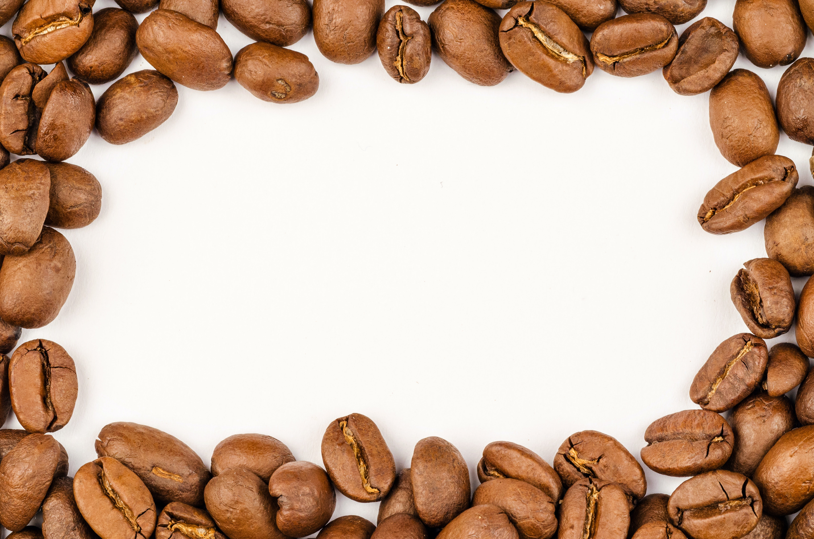

AvaLanche is a wonderful small cafe situated in the heart of Ruse, a gorgeous town on Danube River. It is located
within a walking distance from some of the city's landmarks such as the Statue of Liberty, Opera House and the
Theatre. The place was established by two ladies who desired to have a coffee place in town,
which was cosy and modern, but more importantly a place that offers different and unconventional
drinks. This is the only place in Ruse where you can try the famous Taiwan drink- Bubble Tea.
We also offer Italian wine, Aperol and unique cocktails. Here you can have your coffee in an edible waffle cup
or enjoy a cup of bio latte. And if you are looking for a place to celebrate your birthday we can offer you
a private floor - just for you and your friends.